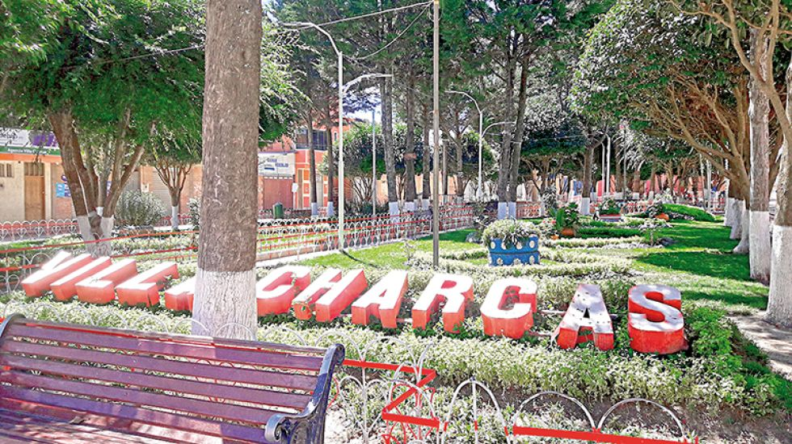

DESARROLLO WEB SIS 256
VILLA CHARCAS
Villa Charcas

Alcalde Municipal de Villa Charcas
Villa Charcas es una localidad y municipio de Bolivia, ubicado en la provincia de Nor Cinti en el departamento de Chuquisaca. Es el municipio más joven de Chuquisaca, creado el 4 de diciembre del 2009.1 El municipio de Villa Charcas esta dividido en 5 distritos los cuales son: Villa Charcas, Pucará de Chunchuli, Santa Elena, Caisa K (o Caisaca) y el distrito de Supas. A 7 kilómetros al sureste se encuentra la localidad de Incahuasi y a 20 kilómetros al sur se encuentra la localidad de Culpina, localidades con las cuales Villa Charcas se encuentra muy relacionada.
Copyright 2022 JL70